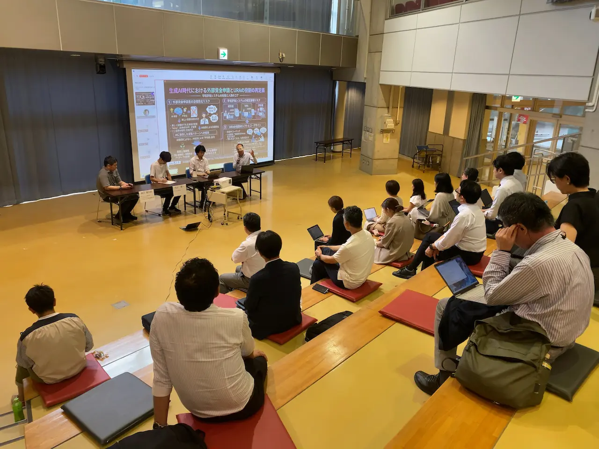
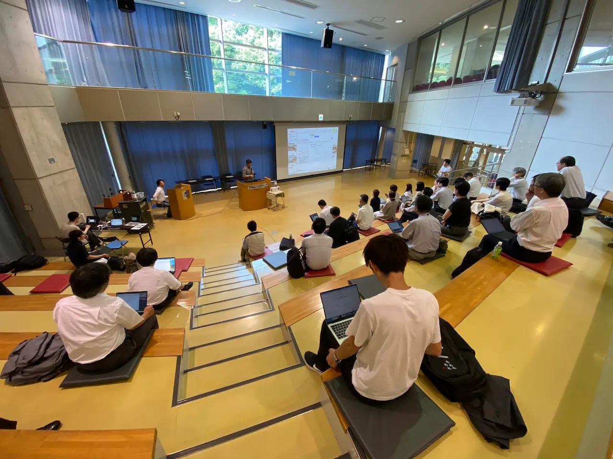

生成AIとURA業務ミニシンポジウム「AI for Research Administration ～URAに求められることとは～」開催報告
2026年6月30日（火）、「生成AIとURA業務」勉強会と横浜国立大学 研究推進機構 URA育成教育研究センターとの共催により、生成AIとURA業務ミニシンポジウム「AI for Research Administration ～URAに求められることとは～」を開催しました。横浜国立大学常盤台キャンパスを会場とするハイブリッド形式で実施し、大学・研究機関・企業等から約280名の参加登録がありました。
本シンポジウムでは、生成AIを単なる業務効率化ツールとして捉えるのではなく、研究活動、研究評価、資金配分、研究組織運営をどのように変え得るのか、そしてAIと協働する時代にURAや研究支援者には何が求められるのかを、企業、メタサイエンス、政策、URA実務の各視点から議論しました。
1. 開催概要
- イベント名：生成AIとURA業務ミニシンポジウム「AI for Research Administration ～URAに求められることとは～」
- 日時：2026年6月30日（火）14:00～17:10
- 会場：横浜国立大学 中央図書館 メディアホール
- 開催形式：現地・オンラインのハイブリッド開催
- 共催：RA協議会 スキルプログラム専門委員会公認「生成AIとURA業務」勉強会、横浜国立大学 研究推進機構 URA育成教育研究センター
- 対象：URA、大学職員、研究推進・研究支援に関わる方、AI for Research Administrationに関心のある方
- 参加登録：約280名

2. プログラム
| 14:00–14:10 | 開会挨拶 |
|---|---|
| 14:10–14:50 |
講演①「研究領域における生成AIの利活用の可能性（仮）」 日本マイクロソフト株式会社 Sr. AI Specialist / Education AI 事業開発責任者 阪口福太郎 氏 |
| 14:50–15:20 |
講演②「メタサイエンスから見た生成AIの影響」 メタサイエンス研究会 丸山隆一 氏 |
| 15:20–15:40 | 休憩 |
| 15:40–16:30 |
講演③「文部科学省におけるAI for Science施策について」 文部科学省 研究振興局 参事官（情報担当）付 次世代情報基盤技術係長（AI for Science担当） 三上紘史 氏 |
| 16:30–17:00 | パネルディスカッション |
| 17:00–17:10 | 閉会挨拶 |
3. 講演内容要旨
(1) 研究領域における生成AIの利活用の可能性（仮）（日本マイクロソフト株式会社 阪口福太郎氏）
阪口氏からは、生成AIの活用が要約・翻訳・資料作成といった個別作業の効率化から、目標に応じて複数の作業を自律的に組み立て、実行する段階へ移りつつあることが紹介されました。特に、あらかじめ固定した手順に沿って動く従来のエージェントを超え、AIが必要な役割や手順を動的に構成する「ハーネス」の考え方を中心に、URA業務の変化が示されました。
- 生成AI活用の現在地：文章、音声、動画、画像、既存テンプレート等を横断して理解し、報告書、集計レポート、プレゼンテーション等を既存の業務環境の中で作成できるようになっている。
- 「指示」から「目標と制約の設計」へ：AIに細かな手順を逐一指示するのではなく、達成したい目標、参照可能なデータ、守るべきルール、承認が必要な箇所等を設計すると、AIがタスクを分解し、複数の役割を組み合わせて実行する。
- URA業務の変化：研究機会の探索、申請書の編集、進捗確認といった作業中心の支援から、勝ち筋の早期発見、採択可能性を高めるチーム設計、将来リスクの予兆把握、倫理・知財・産学連携を含む横断的支援へ重点が移る。
- 人に残る役割：AIは複数の選択肢や根拠を提示できても、最終的な選択、責任、研究者との対話、関係者をつなぐ判断は担えない。URAの価値は、文書を何本作ったかではなく、研究を前進させる意思決定や体制を生み出せたかに置かれる。
- 新たなリスク：AIから大量の提案や報告が上がることで、人間側の判断疲労が増し、確認が形骸化するおそれがある。データ、テンプレート、ルール、レビュー、ログを設計し、どこまでをAIに任せ、どこで人が承認するかを明確にする必要がある。
- セキュリティ：組織の認証・権限管理下でAIを利用し、外部サービスとの接続を管理することが重要である。特に出所不明の外部ツールや連携機能は、情報流出につながる可能性を踏まえて慎重に扱う必要がある。
(2) メタサイエンスから見た生成AIの影響（メタサイエンス研究会 丸山隆一氏）
丸山氏からは、科学そのものを研究対象として捉え、その仕組みをより良くしようとする「メタサイエンス」の考え方が紹介されました。生成AIは研究方法だけでなく、研究評価、学術出版、資金配分、オープンサイエンス等の前提条件を急速に変えており、科学コミュニティ自身が制度を実験し、学習し続ける必要があると指摘されました。
- メタサイエンスとは：科学の営みを理解するだけでなく、研究評価や資金配分等の仕組みを実験的に改善していく研究・実践である。研究者、政策担当者、資金配分機関、民間財団、企業等が分野横断で参加している。
- 制度そのものを実験する：審査コストや保守的な選択を減らすため、当落線上の提案を無作為抽出する「ロッタリー・ファンディング」等が試されている。重要なのは導入自体ではなく、効果を検証し、次の制度改善へつなげることである。
- AIがもたらす非定常性：仮説生成から実験、論文作成までを行うAIシステムの能力向上は速く、現時点のルールや対応策が短期間で陳腐化する。固定的な「AI-ready」の状態を目指すより、変化に適応し続ける仕組みが必要になる。
- 査読・出版システムへの圧力：AI分野では投稿数の急増、架空引用、AIを用いた査読、利用ポリシー違反等が顕在化している。学会やプレプリント基盤はルールを更新しながら対応しており、その試行錯誤自体がメタサイエンスの対象となる。
- AI for RAの可能性：AI活用を個人のスキルや自己責任だけに委ねず、大学としてのガバナンス、実践知の共有、組織横断の学習が必要である。URAの役割も、個々の研究者への支援から、人・知識・制度を束ね、つなぐ役割へ広がる可能性がある。
- AIへのアクセス格差：高性能AIへのアクセスが経済力や輸出規制等に左右されれば、国や組織間の研究力格差が拡大する。研究支援がAIに依存するほど、利用可能性と自律性を政策課題として捉える必要がある。
(3) 文部科学省におけるAI for Science施策について（文部科学省 三上紘史氏）
三上氏からは、日本のAI for Science施策が形成された背景と、AI for Scienceによる科学研究革新プログラムの全体像が紹介されました。同プログラムは、世界水準の研究革新を狙うARiSEと、幅広い研究分野へのAI活用の波及を狙うSPReADを両輪とし、研究のトップ層と裾野の双方を広げる構想です。
- AI for Scienceの範囲：AIを科学研究の各段階に適用する取組だけでなく、AIそのものの研究開発、人材育成、社会実装、データ・計算・通信等の研究基盤整備も含む。
- 政策の二本柱：ARiSEは重点領域に対する大規模・戦略的支援、SPReADは人文学・社会科学から自然科学まで、AI活用経験の少ない研究者や学生を含む幅広い層の挑戦を後押しするボトムアップ型支援として設計された。
- SPReADの特徴：「迅速な支援」「AI導入に必要な伴走支援」「独創的研究の芽出し支援」を柱とし、1課題500万円以下、約半年の研究期間で、完成された成果だけでなくPoCや失敗から得られた知見も成果として捉える。
- 挑戦的な審査設計：無作為抽出、AIインタビュー、AIによる審査補助、応募書類の形式チェックツール等を試行している。AIが採否を決定するのではなく、審査区分や審査員割当て、参考情報の提示等を補助する位置づけである。
- 第1回公募の反響：15,868件の応募に対して456課題を採択し、採択割合は2.9％となった。61名の学生が採択され、そのうち2名は学部生であり、幅広い層にAI for Scienceへの関心が広がっていることが示された。
- 顕在化した課題：低い採択割合、無作為抽出やAI活用の透明性、機関承認の負担、短い研究期間、AI初心者が提案書作成段階で直面する壁等が指摘されている。今後は規模の拡充、制度の透明性向上、事前学習機会、SPReADとARiSEの間をつなぐ支援が検討課題となる。
- コミュニティ形成：採択者、AI研究者、計算資源提供者、民間企業等が知見や悩みを共有する場を形成し、将来的には研究者主体で自律的に発展するコミュニティを目指している。
4. パネルディスカッション
パネルディスカッションでは、参加登録時アンケートの結果を起点に、URA業務における生成AI活用の現状と課題が議論されました。研究戦略やプレアワードでは活用が進む一方、正確な数値処理、機密情報、権限、責任が関わるポストアワードやガバナンス領域では、導入を試したものの断念した例も比較的多いことが示されました。
- AIが働ける「場」を整える：予算管理やコンプライアンス等の高度な業務では、AIに十分な根拠データ、規程、権限、判断基準を与えなければ、確認作業がかえって増える。人を採用する際にマニュアルや研修が必要なのと同様に、AIが適切に働く環境の設計が先に必要である。
- データとガバナンス：非公開情報や要配慮個人情報を扱う場合は、利用規約、契約条件、組織の情報管理・セキュリティ方針を確認し、研究機関と利用者双方が責任を持って判断する必要がある。
- 「AIで書き、AIで審査する」循環：申請者側のAI利用が一般化すれば文書量が増え、評価側もAIを使わざるを得なくなる。審査への導入は、審査員割当てや論点抽出等の補助から段階的に進め、公平性、透明性、説明責任を検証し続ける必要がある。
- 研究者の個性を消さない使い方：研究者とURAの対話を録音・文字起こしし、研究者の発想や語りを申請様式に構造化する使い方が紹介された。AIは個性を平均化するだけでなく、研究者固有の知識や経験を適切な文脈として与えることで、その特徴を引き出す支援にもなり得る。
- ポストアワードに残る人間の知：チーム内の相性、関係者間の調整、研究不正への対応等は、文書化されていない暗黙知や信頼関係に依存する。AIに複数案を示させることはできても、現場の文脈を踏まえて選択し、責任を負う役割は人に残る。
- URAの役割の再定義：AIの導入によって文書作成等の作業が減る一方、業務環境の設計、データ整備、制度の評価、人と人をつなぐ調整、最終判断の比重が高まる。AIを使うこと自体ではなく、研究を前進させる仕組みを設計できるかが問われる。
5. シンポジウムを通じて見えたこと
3つの講演とパネルディスカッションに共通していたのは、生成AIの導入によってURAの仕事が単純に減るのではなく、仕事の重心が変わるという見通しです。情報収集、要約、書式への転記等はAIに移行しやすい一方、何を目的とし、どのデータを使い、どの制約を設け、どこで人が判断するかを設計する仕事は、これまで以上に重要になります。
また、AI時代の研究支援では、個々のURAがツールを使いこなすだけでは十分ではありません。AIの利用履歴や成果を組織の知識として蓄積し、安全に利用できる環境を整え、制度や実践を短い周期で検証・改善する必要があります。URAには、研究者に寄り添う支援者であると同時に、研究組織全体を見渡し、人・情報・制度・技術をつなぐ設計者としての役割が期待されます。
6. 関連情報


＜ 活動報告一覧に戻る